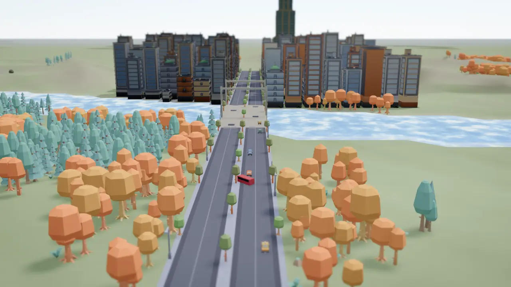
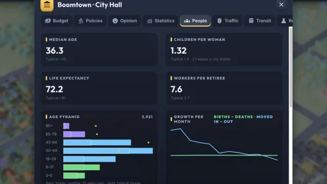
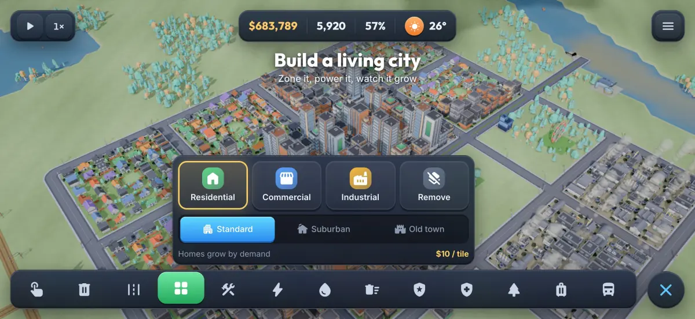
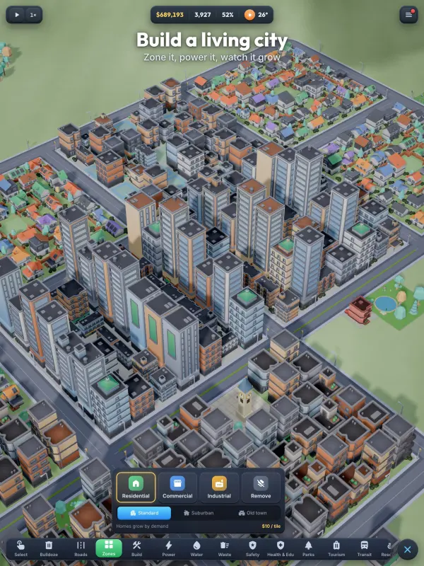

Build a living city
Your town, your rules: zone neighbourhoods, keep the lights on through heat waves and cold snaps, feed your people and watch traffic come alive.
Boomtown is a relaxing but deep city builder. Paint homes, shops and industry, connect power and water, and watch your citizens move in, raise families, commute to work and tell you exactly what they think.
Zone it, power it, watch it grow
Snow, heat waves and storms change how your city runs

Residents are born, grow old and pass on
Grow food, sell the surplus, dig for ore
Data maps reveal traffic, pollution and land value
Landmarks, old towns and pedestrian streets draw visitors
Every car picks its own route. Car-free households walk or ride transit. Run bus, tram and train lines, pedestrianise streets and open an airport.
Set taxes per zone, fund each department, take out loans and choose from 14 policies.
17 technologies, from trams to nuclear power, and wonders like the World Expo and the Space Center.
Fires spread from house to house, storms damage buildings and unhappy residents take to the streets.
Traffic, pollution, groundwater, wind, crime, age, visitors and more, with a colour-blind mode.
Eight ranks from hamlet to megacity, timed missions, 25 achievements and surprise news events.
Place, preview, confirm. Hold any button to learn what it does, undo your last moves, and switch on left-handed mode or a larger interface (UI size).
iPhone and Android play in landscape. iPad also supports portrait.


iOS 15 or later.
Android 7.0 (API 24) or later, phones and tablets.
Landscape on iPhone and Android. iPad also plays in portrait.
None. Plays fully offline.
$120,000 to start. Upkeep ×0.8, fires half as likely, and no bankruptcy.
$60,000 to start. Go 12 months in the red and the city is bankrupt.
$30,000 to start. Upkeep ×1.25, fires 1.5× as likely, same bankruptcy rule.
Unlimited money and every unlock free. Achievements don't count.
Choose the city size, terrain, generation pace and calendar for each new city.
Hamlet, Village, Town, Small City, City, Metropolis, Megalopolis, Megacity.
Kept across all your cities. Sandbox cities don't count.
12 kinds of goal with cash rewards. They expire, so pick the ones you can reach.
Plus 5 grand projects, from the World Expo to the Space Center.
Coming to the App Store and Google Play.
4.99 · one-time purchase · no ads, no in-app purchases